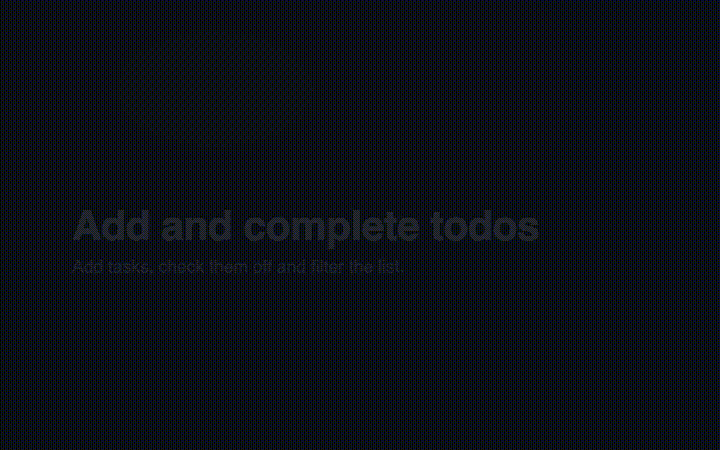

Record a walkthrough once as code. demo-engine re-runs it in CI, detects what changed, repairs broken steps and re-renders the narrated video. Your help center never shows last year's UI again.
Open source · Apache-2.0 · Playwright + Remotion · no API keys required

npx demo-engine build demos --base-url https://staging.example.com
Headless Chromium executes the flow and captures a crisp 2× frame before and after every step. Animations off, fonts awaited, UTC. Deterministic.
Against the last blessed run: locator resolution, masked pixel diff, accessibility-tree text diff. Each step is unchanged, cosmetic, changed or broken.
Broken locators get a replacement (LLM, or an offline matcher), verified by re-running. The old locator stays as a fallback. You review the diff.
Scripts are polished once and cached per line. Only changed sentences are re-synthesized, so the voice never drifts between releases.
Remotion composes screenshots, a synthesized cursor, click ripples, zooms, captions and voice into an MP4. Unchanged flows keep their video.
A markdown table lands on the pull request. Broken flows fail the job. Your demos are now smoke tests.
User-facing locators, one sentence of narration per step, and the paths in your repo that affect it.
# demos/invite-teammate.flow.yaml name: Invite a teammate url: ${BASE_URL}/settings/team touches: ["src/settings/team/**"] steps: - say: Open Team settings from the sidebar. click: { role: link, name: Team } - say: Click Invite and enter an email. click: { role: button, name: Invite member } - say: Pick a role. Admins can manage billing. select: { target: { label: Role }, option: Admin } zoom: { scale: 1.6 } - say: Send the invite. click: { role: button, name: Send invite } expect: { text: Invite sent }
## demo-engine report ✏️ 1 changed · 1 rendered · 4 flows in 61s | flow | status | notes | |-------------------|-----------|---------------------------| | Invite a teammate | ✏️ passed | 1 changed, 3 unchanged | | | | 1/1 locators healed | | | | 2 touching files changed | | Create a project | ✅ passed | 5 unchanged | | Export a report | ✅ passed | 4 unchanged | | Billing settings | ✅ passed | 6 unchanged | #### Heals — Invite a teammate - ✅ step 4 "Send the invite." button "Send invite" → button "Send invitation" (heuristic, 95%)
Nothing is required. Each level gives the engine more visibility into what changed.
| Level | You add | You get |
|---|---|---|
| 0 Nothing | Flow files and a URL | Run, diff, heal, render against any site you can reach. |
| 1 Repo | demos/ with touches: globs, the GitHub Action | build --since knows which flows a PR affects. Heals come back as a reviewable diff. |
| 2 Anchors | data-demo="…" on a few stable elements | Locators that survive copy changes. demo-engine anchors fails CI when one disappears. |
| 3 Tests | import { test } from "@demo-engine/playwright" | Your e2e suite records narrated demos as a by-product. |
Launch videos that match the product on launch day, and still match a quarter later.
Help-center walkthroughs regenerated with every release. Zero re-recording.
A demo that breaks is a regression you caught before a customer did.
npm i -D demo-engine npx playwright install chromium npx demo-engine init --base-url http://localhost:3000 npx demo-engine build demos
Works with no keys. Add ANTHROPIC_API_KEY for polished scripts and smarter heals, ELEVENLABS_API_KEY for a production voice.